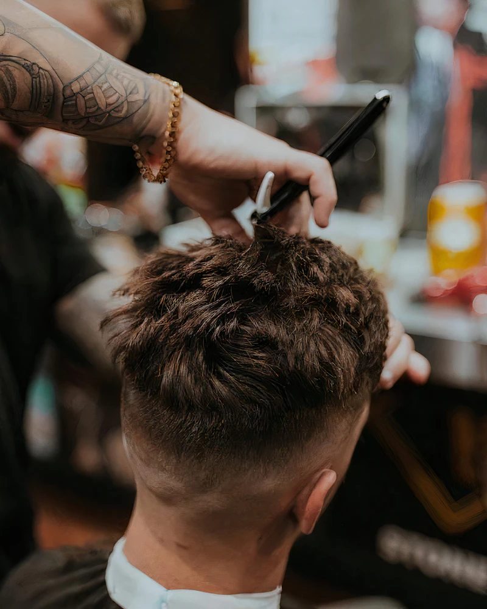
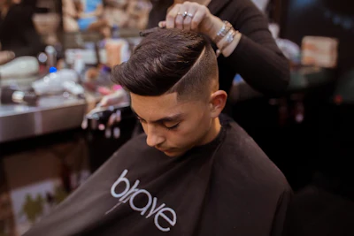
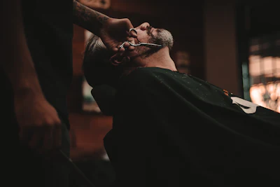
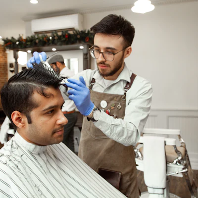
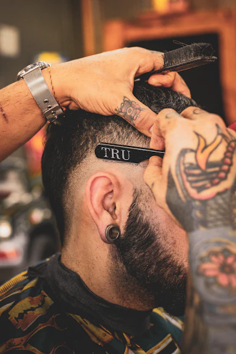
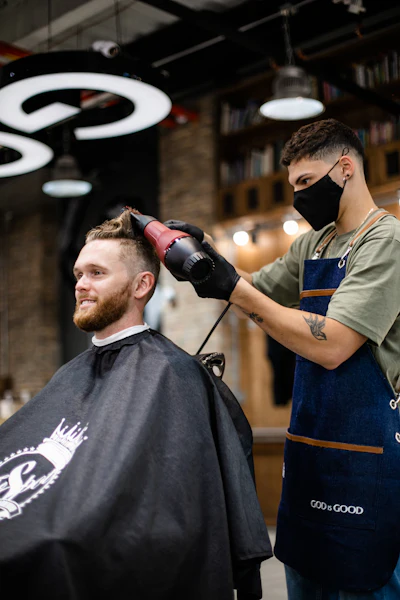

Barber Shop · Rosny-sous-Bois
Le barbier du quartier, pour hommes, femmes et enfants. Dégradés, barbe, rasage à l’ancienne, tresses et locks. Nouveau salon à Rosny-sous-Bois.

Nouveau salonJoe’s déménage à Rosny-sous-Bois.
Retrouvez-nous au 3 square des Lilas, 93110 Rosny-sous-Bois.
Métro 11, station La Dhuys, à quelques minutes à pied. RER E : Rosny-Bois-Perrier.
Le salon du 62 rue Martre, à Clichy, est fermé. Un doute avant de venir ? Appelez le 07 82 19 67 04.
Ce qu’on fait.
Et combien ça coûte.
Coupe à la tondeuse
Uniquement tondeuse. 30 à 45 min.
dès23 €
Coupe tondeuse + ciseaux
Le dégradé avec un dessus travaillé aux ciseaux. 30 min.
dès28 €
Coupe aux ciseaux
Uniquement ciseaux. 40 à 45 min.
dès30 €
Coupe et barbe
Tondeuse uniquement. 30 à 45 min.
dès28 €
Coupe ciseaux et barbe
Tondeuse + ciseaux ou uniquement ciseaux. 40 à 50 min.
dès33 €
Taille de la barbe
15 min.
15 €Rasage de la barbe à l’ancienne
Au rasoir. 30 min.
30 €Rasage du crâne à l’ancienne
Au rasoir. 45 min.
35 €Coupe enfant
Moins de 10 ans. 15 min.
dès15 €Les extras
- Contourdès 10 €
- Coloration sur design10 €
- Fibre3 €
- Shampoingdès 10 €
- Shampoing de la barbe10 €
- Coloration de la barbe20 €
- Décoloration de la barbe20 €
- Soin du visage (homme ou femme)35 €
Tresses, locks & femme
- Natte collée hommedès 35 €
- Natte collée femmedès 45 €
- Vanillesdès 50 €
- Fulani sans rajoutsdès 65 €
- Twist75 €
- Knotless braidsdès 80 €
- Départ de locks en twistdès 100 €
- Invisible locksdès 150 €
- Coupe cheveux courts (afro ou caucasien)25 €
- Brushing femme20 €
- Retrait de tressesdès 20 €
Tarifs indicatifs. Le prix exact « à partir de » dépend de la longueur et du travail demandé : le salon vous le confirme avant la prestation.
Tous les cheveux. Toute la famille.
Joe’s Barber Shop accueille les hommes, les femmes et les enfants. L’équipe travaille les cheveux européens comme les cheveux afro et texturés : dégradé à la tondeuse, coupe aux ciseaux, barbe au rasoir, tresses et locks.
Vous venez pour une coupe rapide ou pour une coiffure de plusieurs heures ? Dites-le-nous en réservant, on prévoit le bon créneau.
Lire les avis


On vous répond.
Où se trouve le salon aujourd’hui ?
Au 3 square des Lilas, 93110 Rosny-sous-Bois. Le salon du 62 rue Martre, à Clichy, est fermé : merci de ne plus vous y rendre.
Comment prendre rendez-vous ?
Remplissez le formulaire plus bas : votre demande part sur WhatsApp et le salon vous confirme le créneau. Vous pouvez aussi appeler le 07 82 19 67 04.
Vous coiffez les femmes et les enfants ?
Oui. Coupe enfant (moins de 10 ans) dès 15 €, brushing, nattes collées, tresses, twists et locks pour les femmes.
Vous travaillez les cheveux afro et texturés ?
Oui, c’est une spécialité de la maison, au même titre que les cheveux européens : dégradés, coupes, tresses, vanilles, locks.
Quels moyens de paiement ?
Espèces et carte bancaire.
Votre prochaine coupe.
Choisissez la prestation et le créneau. Le salon vous confirme le rendez-vous par message.